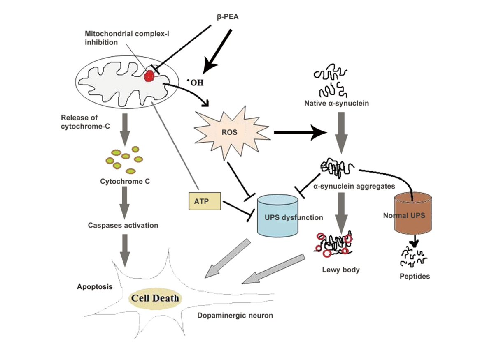
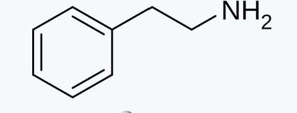

MAO-B抑制剂(如司来吉兰)一起服用。药效强烈，持续约3个小时，起效剂量约为0.3g。
副作用包括高血压，心律不齐和宿醉。
动物研究表明，高剂量的苯乙胺导致多巴胺能神经元凋亡，诱发帕金森病。
由于副作用和可能的神经毒性，若要服用苯乙胺，建议提前准备反制高血压措施，避免高剂量或长期服用苯乙胺。

副作用包括高血压，心律不齐和宿醉。
动物研究表明，高剂量的苯乙胺导致多巴胺能神经元凋亡，诱发帕金森病。
由于副作用和可能的神经毒性，若要服用苯乙胺，建议提前准备反制高血压措施，避免高剂量或长期服用苯乙胺。


每日💊科普(day6)苯乙胺
苯乙胺是一种内源性物质。它是NDRA，属于兴奋剂。被一些人用于神经保健品。一些外国小哥报告，低剂量有抗抑郁效果。
娱乐性使用导致的副作用多，研究表明它有神经毒性。药效类似于苯丙胺。由于被MAO-B迅速代谢，单独服用药效短(30分钟)，且起效剂量高(3g+)。
因此，通常与
(续) https://t.co/CuJfYwmm9H
苯乙胺是一种内源性物质。它是NDRA，属于兴奋剂。被一些人用于神经保健品。一些外国小哥报告，低剂量有抗抑郁效果。
娱乐性使用导致的副作用多，研究表明它有神经毒性。药效类似于苯丙胺。由于被MAO-B迅速代谢，单独服用药效短(30分钟)，且起效剂量高(3g+)。
因此，通常与
(续) https://t.co/CuJfYwmm9H